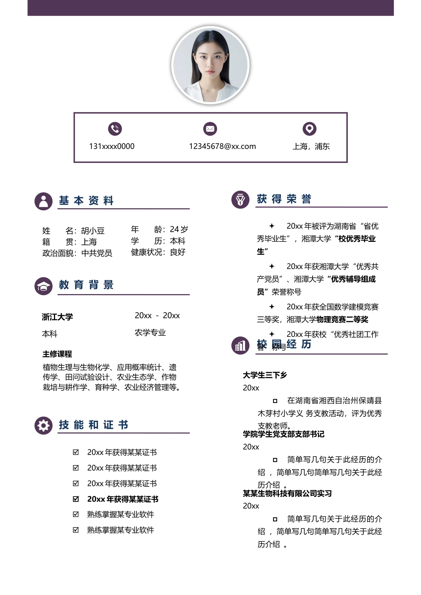

年 龄：24 岁
学 历：本科
健康状况：良好
姓 名：胡小豆
籍 贯：上海
政治面貌：中共党员
上海，浦东
12345678@xx.com
131xxxx0000
20xx 年获得某某证书
20xx 年获得某某证书
20xx 年获得某某证书
20xx 年获得某某证书
熟练掌握某专业软件
熟练掌握某专业软件
校 园 经 历
大学生三下乡
20xx
在湖南省湘西自治州保靖县
木芽村小学义 务支教活动，评为优秀
支教老师。
学院学生党支部支部书记
20xx
简单写几句关于此经历的介
绍 ，简单写几句简单写几句关于此经
历介绍 。
某某生物科技有限公司实习
20xx
简单写几句关于此经历的介
绍 ，简单写几句简单写几句关于此经
历介绍 。
植物生理与生物化学、应用概率统计、遗
传学、田问试验设计、农业生态学、作物
栽培与耕作学、育种学、农业经济管理等。
主修课程
教 育 背 景
浙江大学
本科
20xx - 20xx
农学专业
20xx 年被评为湖南省“省优
秀毕业生”，湘潭大学
“校优秀毕业
生”
20xx 年获湘潭大学“优秀共
产党员”、湘潭大学
“优秀辅导组成
员”
荣誉称号
20xx 年获全国数学建模竞赛
三等奖，湘潭大学
物理竞赛二等奖
20xx 年获校“优秀社团工作
者”称号
基 本 资 料
技 能 和 证 书
获 得 荣 誉